Il segnale StartW è un impulso che segnala l'inizio di una Word (12 bit); quand attivato carica C2 con la tensione Vcc.
Il clock trifase f0, f1 (f2) si preoccupa di dividere per 2 il valore di tensione ai capi di C2.
| HOME | PERSONAL | PROJECTS | LINKS |
A mio avviso è da reletivamente pochi anni (con lo sviluppo
del Mpeg III e la nascita sul mercato di svariati tipi di lettore) che
la diffusione di audio in formato digitale ha raggiunto un ampio
numero di utenti.
L'idea è di portare le tecniche dell'elettronica digitale fino
allo stadio finale di potenza al fine di rendere quest'ultimo il
più possibile semplice ed economico. Eventuali elaborazioni per
equalizzare il segnale in uscita possono essere realizzate a monte
dell'amplificatore con le tecniche dei filtri digitali implementati via
software. Si progetterà alora un hardware minimale per lo stadio
di potenza, affiancato da un microprocessore per l'implementazione del
filtro digitale.
Lo schema in questione si presta a scopi didattici grazie alla sua
rigorsa suddivisione in blocchi funzionali ed alle innumerevoli
applicazioni che può offrire lo sviluppo software.
Il software può autoequalizzarsi in due modi: in base al segnale
perlevato dall'uscita e anche da un microfono posto in prossimità
delle casse acustiche.
L'equalizzazione che sfrutta la retroazione diretta è in grado
di correggere la linearità e la dinamicità
dell'amplificatore e così facendo ci fornisce automaticamente
(grazie ad un'analisi di Fourier) le caratteristiche del segnale PAM.
Si può ad esempio monitorare la forma degli impulsi allo scopo
di comprendere e migliorare le caratteristiche dello stadio finale e
dei dispositivi utilizzati (mos, bjt, igbt, ..). Una ulteriore fase di
taratura consiste nell'utilizzare la retroazione del microfono per
determinare (e correggere) le distorsioni introdotte dagli speaker.
Una volta note le caratteristiche dinamiche di finale e speaker si
può procedere a studiare le caratteristiche acustiche
dell'ambiente. A questo punto l'hardware e il software forniscono uno
strumento che si presta alle applicazioni più disparate in
campo acustico (si pensi alla misura della performance di casse
acustiche, alla messa a punto di ambienti dalle caratteristiche
acustiche desiderate, allo studio di sistemi con più diffusori
e più microfoni per mettere a punto un antidoto ad un rumore
indesiderato, etc.)
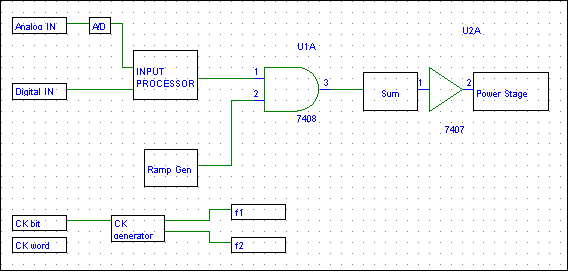
Genera una rampa del tipo  .
.
Il segnale StartW è un impulso che segnala l'inizio di una Word
(12 bit); quand attivato carica C2 con la tensione Vcc.
Il clock trifase f0, f1 (f2) si preoccupa di dividere per 2 il valore
di tensione ai capi di C2.
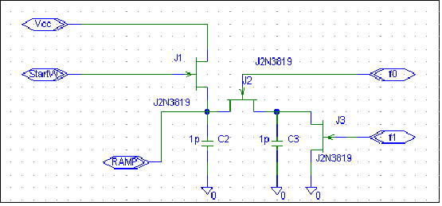
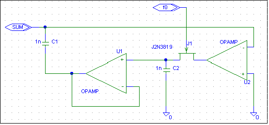
La tensione ai capi della capacità C1 è accresciuta ad ogni bit processato della quantità
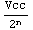
. Una volta processati tutti i bit di una word, la tensione ai capi della capacità sarà proporzionale al valore binario della word in questione. Il blocco considerato può assumere due stati logici: SetToZero e Sum. La situazione nella fase f1 è la seguente:
il nodo Sum è a 0, ai capi di C1 la
tensione è sempre la stessa (
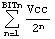
).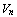
.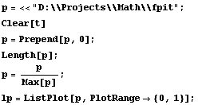
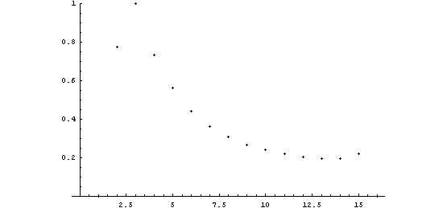
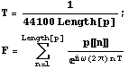
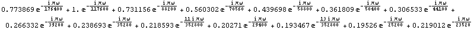
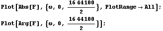
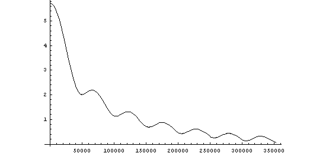
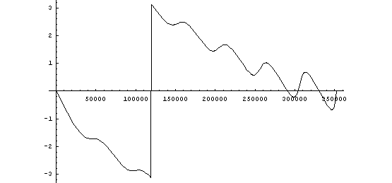
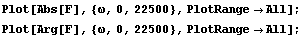
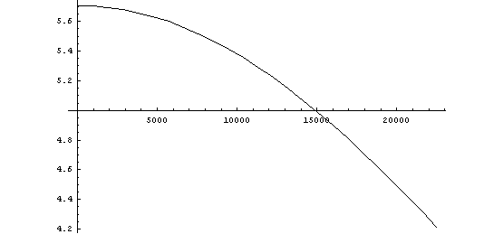
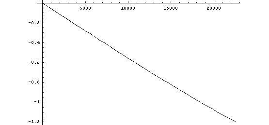
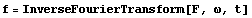
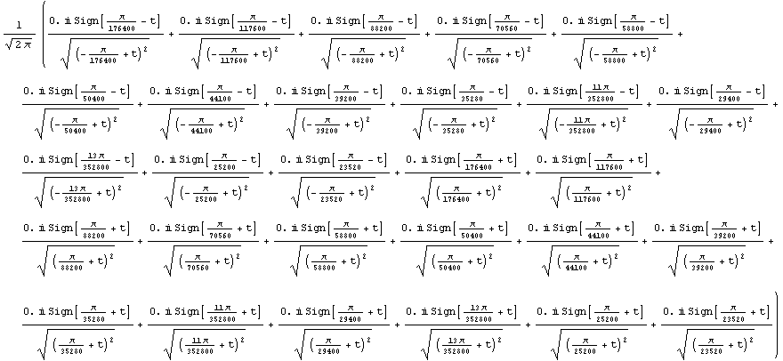
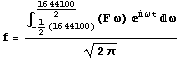
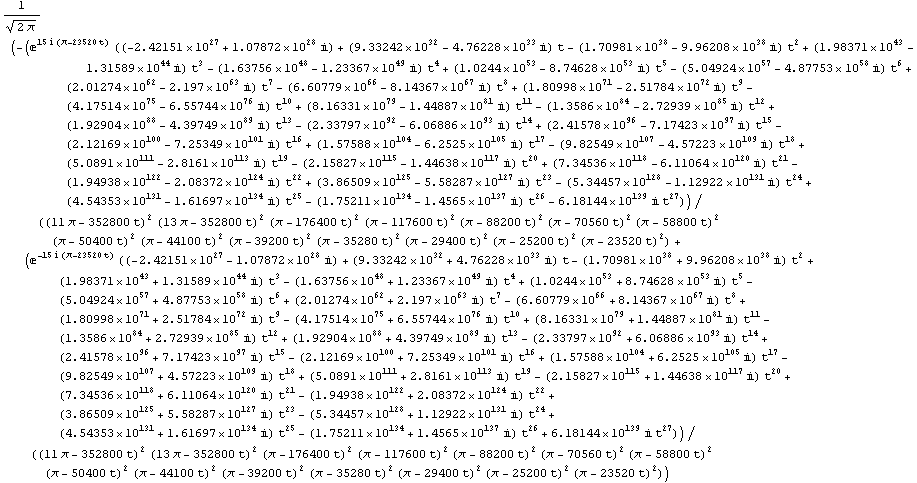
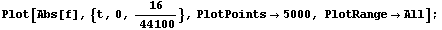
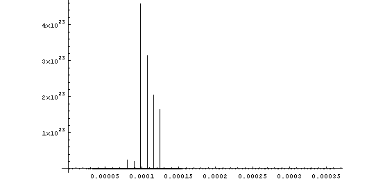
| HOME | PERSONAL | PROJECTS | LINKS |